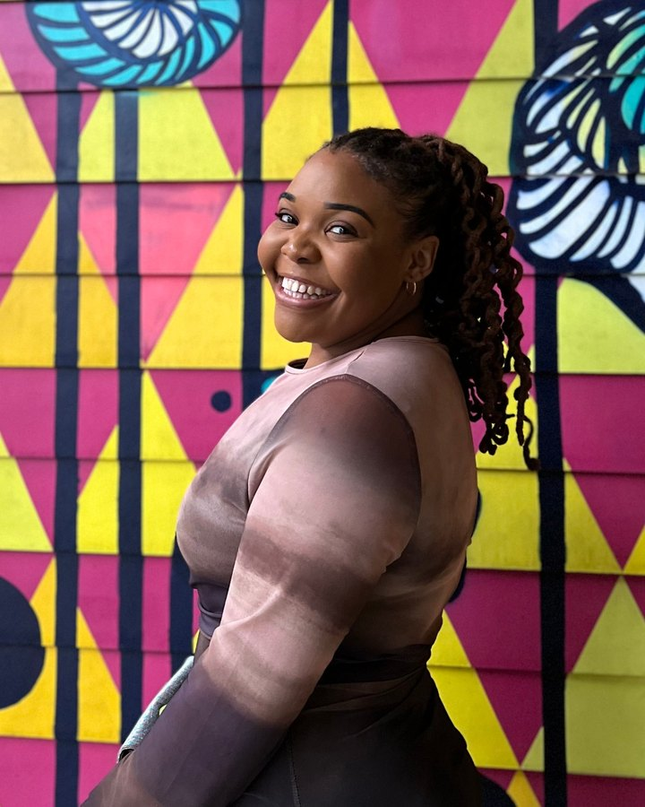
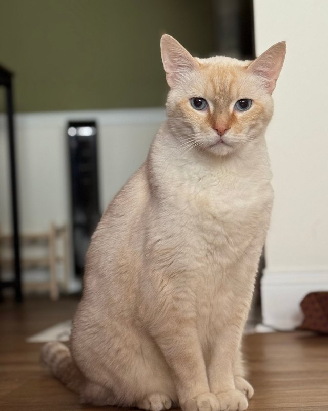

Oh, hello! I'm Elizabeth.

I spend most of my time figuring out how to make complex work a little simpler.
Today, I'm a Product Manager at The Home Depot, building AI-powered products and agentic workflows for assortment and space planning. My focus is identifying complex business challenges, uncovering user needs, and delivering scalable solutions that improve both operational efficiency and customer outcomes.
What's unique about my perspective is that I've worked across nearly every stage of the merchandising lifecycle. I've run departments at H&M and Belk, managed strategy for a billion-dollar product category as a Merchandise Planner, led training and enablement efforts for merchandising teams, and now build the software those teams use every day.
That experience taught me an important lesson: the best products aren't the ones with the most features. They're the ones that make someone's job noticeably easier.
Currently, I partner with users, engineers, designers, data scientists, and business leaders to turn complex operational challenges into solutions that create real value and save people time. I'm particularly passionate about customer-centric product strategy, AI, change management, and building products people actually want to use.
As AI continues to reshape the way we work, I'm excited by opportunities to help teams work smarter, not harder. Whether that's through agentic workflows, decision-support tools, or process automation, I enjoy finding practical ways to apply AI that create meaningful value instead of technology for technology's sake.
Ultimately, I enjoy translating ambiguity into strategy, aligning cross-functional partners around a shared vision, and shipping products that drive measurable adoption and business value.
How I Spend My Free Time
When I'm out exploring the world as a self-proclaimed hodophile (how-doh-phile), you'll usually find me:
- Cheering on the Georgia Bulldogs or catching an NWSL match
- Singing along to my favorite artist at a live concert
- Hunting down a museum exhibit (bonus points if I can visit more than one in a day)
- Heading to my next group fitness class

When I'm at home:
- Spending time with Hello Kitty, my feline roommate and unofficial quality assurance manager
- Trying to stay on track with my Goodreads reading goal
- Completing a puzzle while simultaneously binge-watching a new series
- Learning that sewing is really just product development with fabric and significantly pointier tools
In short: I'm passionate about making things better, whether that's through AI-powered products, a sewing project that seemed easier in theory, or convincing Hello Kitty that stakeholder feedback doesn't always make the roadmap.
My Projects
Recent products from Merchandising Product – Assortment & Space at The Home Depot.
-
Agentic Workflows
An AI-assisted capability that helps merchandise planners fix assortment data that doesn't match across systems. I used data to size the opportunity and pick where to start, prototyped the user journeys and a rules engine with AI tools, and review AI outputs before they reach users.
Billions of rows analyzed to choose the first pilot -
Cross-Channel Assortment
I proposed and led a brand-new view of a product's assortment across stores and eCommerce in one place. We launched behind feature flags with pilot and control groups, then rolled out in phases.
~40% of active users in two quarters -
Assortment Platform
I own the internal assortment platform and its source-of-truth data. I led supplier scalability, multi-unit-of-measure controls, and new-store automation, and moved users onto each new experience.
1,000+ suppliers migrated
Product Manager • The Home Depot
Sep 2024 – Present • Merchandising Product, Assortment & Space- Own strategy, roadmap, OKRs, and go-to-market for assortment and space planning products used by merchandising teams.
- Lead brand-new products and agentic workflows from discovery through pilot, rollout, and adoption.
- Partner with engineering, AI, UX, data science, and business leaders on priorities and technical tradeoffs.
Senior Business Analyst • The Home Depot
Jun 2022 – Sep 2024 • Merchandise Management Systems- Translated user workflows and pain points into product requirements with Product and Merchant teams.
- Led training and enablement programs and built the Merchandising Support Hub, a centralized home for tool resources and support that drove adoption across merchandising.
- Led new-store readiness across Merchandising, Store Environment, and Supply Chain.
Merchandise Planner Analyst • The Home Depot
Jun 2020 – Jun 2022- Executed assortment strategy for a major retail category, leading company-wide resets.
- Partnered with vendors on category management and with Finance on margin and cost impact.
Department Manager • H&M
Jan 2017 – May 2020 • Atlanta, GA- Led a department, managing budgets, inventory, and a team of associates.
Sales Team Manager • Belk
Jun 2015 – Jan 2017 • Rome, GA- Coached and developed associates while executing seasonal planograms, visual standards, and brand directives.
Education
University of Georgia
- B.B.A. Management
- B.S. Psychology
- Certificate in Legal Studies
Skills
Retail operator turned product builder.
- 1,000+ Suppliers migrated
- ~40% Active users adopted
- ~99% New-store in-stock
- ~17 wks Eng capacity returned
- 500+ Associates trained
Product
AI & Technical
Domain & Tools
Let's Talk
Hiring for a Senior PM, or want to talk about AI in retail?
I'd love to hear from you.